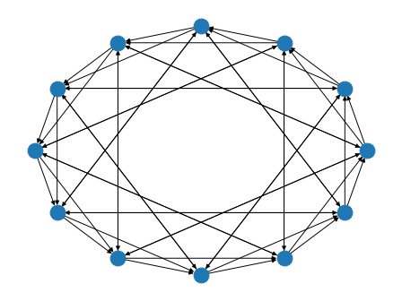
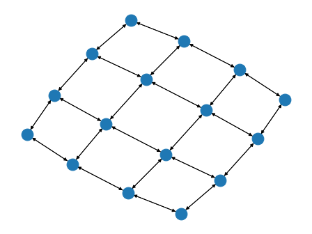
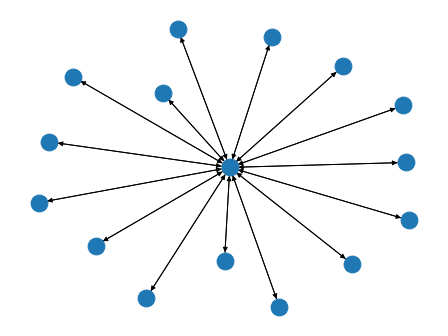
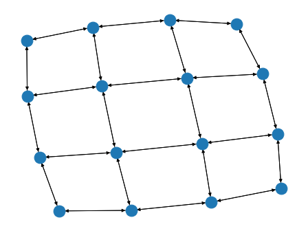
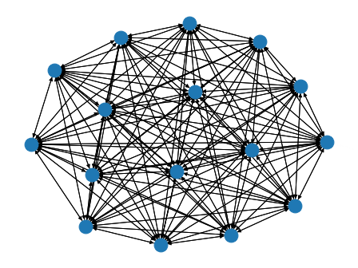
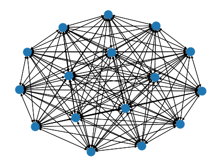
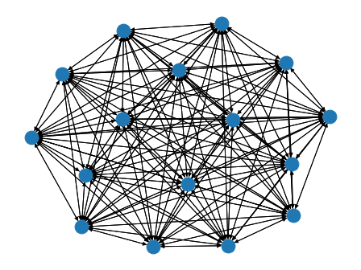

Topology Related Utility Functions¶
We provide several popular static and dynamic topologies.
- Static Topology
ExponentialGraph, ExponentialTwoGraph
SymmetricExponentialGraph
MeshGrid2DGraph
StarGraph, RingGraph
FullyConnectedGraph
- Dynamic Topology
GetDynamicOnePeerSendRecvRanks
GetExp2DynamicSendRecvMachineRanks
GetInnerOuterRingDynamicSendRecvRanks
GetInnerOuterExpo2DynamicSendRecvRanks
- Utility Function
IsRegularGraph
IsTopologyEquivalent
GetSendWeights, GetRecvWeights
You can also write your own topology strategy as long as your static topology function returns a networkx.DiGraph object and dynamic topology function (generator more accurately) yields a list of send neighbor and receive neighbor ranks in each call.
-
bluefog.common.topology_util.IsTopologyEquivalent(topo1: networkx.classes.digraph.DiGraph, topo2: networkx.classes.digraph.DiGraph) → bool¶ Determine two topologies are equivalent or not.
Notice we do not check two topologies are isomorphism. Instead checking the adjacenty matrix is the same only.
-
bluefog.common.topology_util.GetRecvWeights(topo: networkx.classes.digraph.DiGraph, rank: int) → Tuple[float, Dict[int, float]]¶ Return a Tuple of self_weight and neighbor_weights for receiving dictionary.
-
bluefog.common.topology_util.GetSendWeights(topo: networkx.classes.digraph.DiGraph, rank: int) → Tuple[float, Dict[int, float]]¶ Return a Tuple of self_weight and neighbor_weights for sending dictionary.
-
bluefog.common.topology_util.ExponentialTwoGraph(size: int) → networkx.classes.digraph.DiGraph¶ Generate graph topology such that each points only connected to a point such that the index difference is the power of 2.
Example: A ExponentialTwoGraph with 12 nodes:
>>> import networkx as nx >>> from bluefog.common import topology_util >>> G = topology_util.ExponentialTwoGraph(12) >>> nx.draw_circular(G)

-
bluefog.common.topology_util.ExponentialGraph(size: int, base: int = 2) → networkx.classes.digraph.DiGraph¶ Generate graph topology such that each points only connected to a point such that the index difference is power of base. (Default is 2)
Example: A ExponentialGraph with 12 nodes:
>>> import networkx as nx >>> from bluefog.common import topology_util >>> G = topology_util.ExponentialGraph(12) >>> nx.draw_circular(G)

-
bluefog.common.topology_util.SymmetricExponentialGraph(size: int, base: int = 4) → networkx.classes.digraph.DiGraph¶ Generate symmeteric graph topology such that for the first half of nodes only connected to a point such that the index difference is power of base (Default is 4) and the connectivity for the second half of nodes just mirrored to the first half.
Example: A SymmetricExponentialGraph with 12 nodes
>>> import networkx as nx >>> from bluefog.common import topology_util >>> G = topology_util.SymmetricExponentialGraph(12) >>> nx.draw_circular(G)

-
bluefog.common.topology_util.MeshGrid2DGraph(size: int, shape: Optional[Tuple[int, int]] = None) → networkx.classes.digraph.DiGraph¶ Generate 2D MeshGrid structure of graph.
Assume shape = (nrow, ncol), when shape is provided, a meshgrid of nrow*ncol will be generated. when shape is not provided, nrow and ncol will be the two closest factors of size.
For example: size = 24, nrow and ncol will be 4 and 6, respectively. We assume nrow will be equal to or smaller than ncol. If size is a prime number, nrow will be 1, and ncol will be size, which degrades the topology into a linear one.
Example: A MeshGrid2DGraph with 16 nodes:
>>> import networkx as nx >>> from bluefog.common import topology_util >>> G = topology_util.MeshGrid2DGraph(16) >>> nx.draw_spring(G)

-
bluefog.common.topology_util.StarGraph(size: int, center_rank: int = 0) → networkx.classes.digraph.DiGraph¶ Generate star structure of graph.
All other ranks are connected to the center_rank. The connection is bidirection, i.e. if the weight from node i to node j is non-zero, so is the weight from node j to node i.
Example: A StarGraph with 16 nodes:
>>> import networkx as nx >>> from bluefog.common import topology_util >>> G = topology_util.StarGraph(16) >>> nx.draw_spring(G)

-
bluefog.common.topology_util.RingGraph(size: int, connect_style: int = 0) → networkx.classes.digraph.DiGraph¶ Generate ring structure of graph (uniliteral). Argument connect_style should be an integer between 0 and 2, where 0 represents the bi-connection, 1 represents the left-connection, and 2 represents the right-connection.
Example: A RingGraph with 16 nodes:
>>> import networkx as nx >>> from bluefog.common import topology_util >>> G = topology_util.RingGraph(16) >>> nx.draw_circular(G)

-
bluefog.common.topology_util.FullyConnectedGraph(size: int) → networkx.classes.digraph.DiGraph¶ Generate fully connected structure of graph. For example, a FullyConnectedGraph with 16 nodes:
Example: A FullyConnectedGraph 16 nodes:
>>> import networkx as nx >>> from bluefog.common import topology_util >>> G = topology_util.FullyConnectedGraph(16) >>> nx.draw_spring(G)

-
bluefog.common.topology_util.IsRegularGraph(topo: networkx.classes.digraph.DiGraph) → bool¶ Dtermine a graph is regular or not, i.e. all nodes have the same degree.
-
bluefog.common.topology_util.GetDynamicOnePeerSendRecvRanks(topo: networkx.classes.digraph.DiGraph, self_rank: int) → Iterator[Tuple[List[int], List[int]]]¶ A utility function to generate 1-outoging send rank and corresponding recieving rank(s).
- Parameters
topo (nx.DiGraph) – The base topology to generate dynamic send and receive ranks.
self_rank (int) – The self rank.
- Yields
Iterator[Tuple[List[int], List[int]]] – send_ranks, recv_ranks.
Example
>>> from bluefog.common import topology_util >>> topo = topology_util.PowerTwoRingGraph(10) >>> gen = topology_util.GetDynamicOnePeerSendRecvRanks(topo, 0) >>> for _ in range(10): >>> print(next(gen))
-
bluefog.common.topology_util.GetExp2DynamicSendRecvMachineRanks(world_size: int, local_size: int, self_rank: int, local_rank: int) → Iterator[Tuple[List[int], List[int]]]¶ A utility function to generate 1-outgoing send machine id and corresponding recieving machine id(s) for Exponentia-2 topology.
- Parameters
world_size (int) – the size of all nodes; world_size = num_machines * nodes_per_machine
local_size (int) – number of nodes in each machine
self_rank (int) – The self rank.
local_rank (int) – The self local rank.
- Yields
Iterator[Tuple[List[int], List[int]]] – send_machine_ids, recv_machine_ids.
Warning
This function should be used under homogeneous enviroment only, i.e. all machines have the same number of local processes.
-
bluefog.common.topology_util.GetInnerOuterRingDynamicSendRecvRanks(world_size: int, local_size: int, self_rank: int) → Iterator[Tuple[List[int], List[int]]]¶ A utility function to generate 1-outgoing send rank and corresponding recieving rank(s) for Inner-Ring-Outer-Ring topology.
- Parameters
world_size (int) – the size of all nodes; world_size = num_machines * nodes_per_machine
local_size (int) – number of nodes in each machine
self_rank (int) – The self rank.
- Yields
Iterator[Tuple[List[int], List[int]]] – send_ranks, recv_ranks.
Example
>>> from bluefog.common import topology_util >>> world_size, local_size = bf.size(), bf.local_size() >>> gen = topology_util.GetInnerOuterRingDynamicSendRecvRanks(world_size, local_size, 0) >>> for _ in range(10): >>> print(next(gen))
-
bluefog.common.topology_util.GetInnerOuterExpo2DynamicSendRecvRanks(world_size: int, local_size: int, self_rank: int) → Iterator[Tuple[List[int], List[int]]]¶ A utility function to generate 1-outgoing send rank and corresponding recieving rank(s) for Inner-Exp2-Outer-Exp2 ring topology.
- Parameters
world_size (int) – the size of all nodes; world_size = num_machines * nodes_per_machine
local_size (int) – number of nodes in each machine
self_rank (int) – The self rank.
- Yields
Iterator[Tuple[List[int], List[int]]] – send_ranks, recv_ranks.
Example
>>> from bluefog.common import topology_util >>> world_size, local_size = bf.size(), bf.local_size() >>> gen = topology_util.GetInnerOuterExpo2DynamicSendRecvRanks(world_size, local_size, 0) >>> for _ in range(10): >>> print(next(gen))